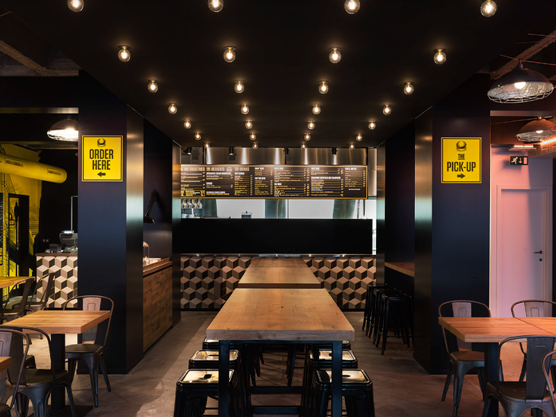

Locales
Barrio Alta Córdoba
Actualmente Stroke & Stone Burger cuenta con una sucursal ubicada en el barrio Alta Córdoba de la ciudad de Córdoba. La misma fue ignagurada en junio del 2022 y se encuentra en pleno funcionamiento. Nuestro local representa nuestro esfuerzo, dedicación y amor por la cultura hamburguesera; es parte de nuestra identidad y estamos en constante aprendimiento para mejorarlo día a día.

MAPA